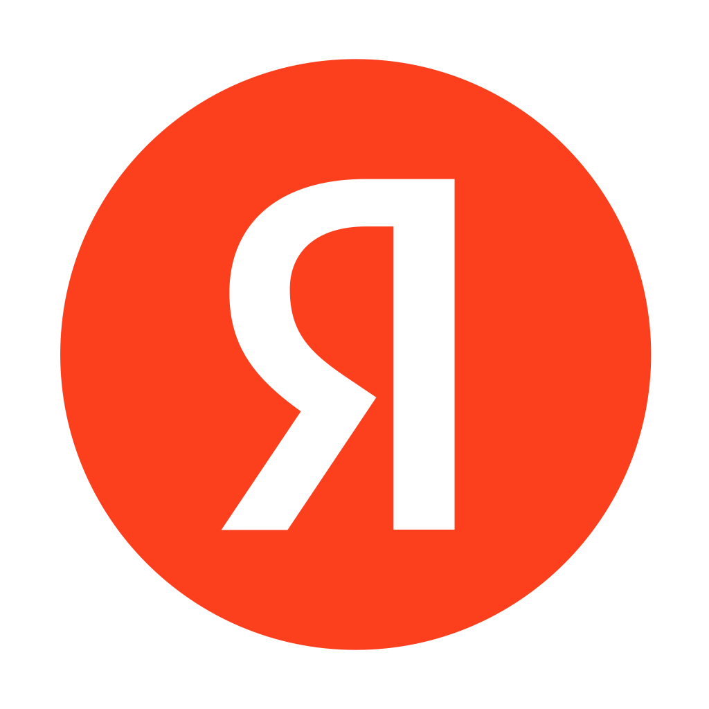

Дальше можно: «все экраны хода 1 в тёмной теме» · «живой прототип: онбординг → первая заметка» · «планшетный layout 900–1200»
Дальше можно: «экран настройки связки с домашним ПК (первый запуск)» · «состояния: модель качается, ПК не в сети, запись прервали звонком» · «виджет быстрой надиктовки на Android»

Войти с Яндекс IDДальше можно: «все экраны из хода 1 — в тёмной теме „Графит“» · «живой прототип: онбординг → первая заметка за 60 секунд» · «экран письма со ссылкой для входа»
Дальше можно: «утвердить 1b как базовую и показать все экраны в тёмной теме» · «собрать живой прототип редактора с переключателем тем» · «онбординг целиком, все 3 шага + флоу шифрования»